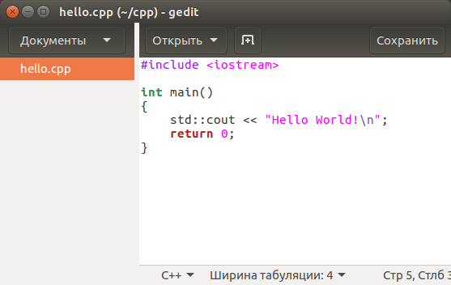
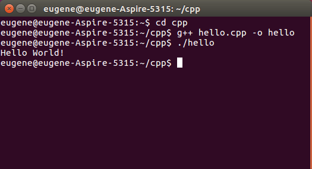

Первая программа на Linux. Компилятор g++
В прошлой теме было рассмотрено создание первой программы на Windows. Теперь рассмотрим создание первой программы на Linux, в частности, в среде Ubuntu 16.04. На Linux также популярным компилятор для создания программ является g++. Поэтому в данном случае также будем использовать этот компилятор.
Как правило, многие дистрибутивы Linux, в том числе и Ubuntu, уже по умолчанию содержат установленный компилятор g++, который мы сразу же можем использовать. Но даже если вдруг он не установлен, то его можно доустановить в терминале через команду:
sudo apt-get install g++В остальном, если мы будем использовать для компиляции компилятор g++, все будет аналогично созданию программы на Windows.
Определим в файловой системе каталог для исходных файлов с кодом на С++ и создадим в нем новый файл hello.cpp со следующим кодом:
#include <iostream> // подключаем заголовочный файл iostream
int main() // определяем функцию main
{ // начало функции
std::cout << "Hello World!"; // выводим строку на консоль
return 0; // выходим из функции
} // конец функции
И это тот же код, что был в случае с Windows, потому что программы на С++ на уровне исходного кода в большей степени обладают переносимостью.
Для вывода строки на консоль необходимо подключить нужный функционал. Для этого в начале файла идет строка
#include < iostream>Данная строка представляет директиву препроцессора, которая позволяет подключить библиотеку iostream. Эта библиотека нужна для вывода строки на консоль.
Далее идет определение функции main. Функция main должна присутствовать в любой программе на С++, с нее собственно и начинается выполнение приложения.
Функция main состоит из четырех элементов:
- Тип возвращаемого значения. В данном случае это тип int. Этот тип указывает, что функция должна возвращать целое число.
- Имя функции. В данном случае функция называется main.
- Список параметров. После имени функции в скобках идет список параметров. Но в данном случае скобки пустые, то есть функция main не принимает параметров.
- Тело функции. После списка параметров в фигурных скобках идет тело функции. Здесь и определяются собственно те действия, которые выполняет функция main.
{
std::cout << "Hello World!\n";
return 0;
}
В теле функции происходит вывод строки на консоль. Для обращения к консоли используется стандартный поток вывода std::cout. С помощью оператора << в этот поток (в данном случае фактически на консоль) передается строка символов, которую надо вывести на консоль, то есть "Hello World!" . В конец строки добавлена специальная управляющая последовательность "\n" , которая позволит после вывода текста перевести курсор на новую строку.
В функции осуществляем выход из функции с помощью оператора return. Так как функция должна возвращать целое число, то после return указывается число 0. Ноль используется в качестве индикатора успешного завершения программы.
После каждой инструкции в языке C++ ставятся точка с запятой.
Перейдем к терминалу и вначале с помощью команды cd перейдем к каталогу, где расположен файл с исходным кодом.
Далее для компиляции программы введем команду:
g++ hello.cpp -o helloКроме имени файла с исходным кодом компилятору передается параметр -o hello. Он указывает, что мы хотим скомпилировать файл по имени hello. Если этот параметр не передать, то будет создан файл с именем по умолчанию - a.out.
В итоге после выполнения выше приведенной команды в папке с файлом hello.cpp появится скомпилированный файл, который будет называться hello. И мы сможем его запустить с помощью следующей команды:
./helloИ на консоль будет выведена строка "Hello World!".
 Лабораторная №1
Лабораторная №1